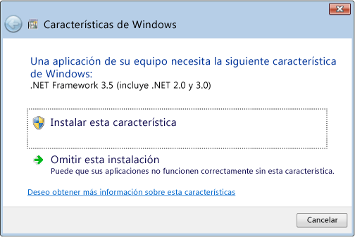
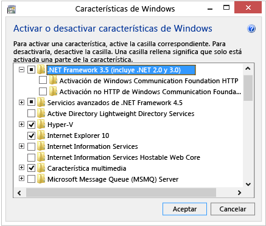

Instalar .NET Framework 3.5 en Windows 8 u 8.1
Instalar .NET Framework 3.5 en Windows 8 u 8.1
.NET Framework es una parte integral de muchas aplicaciones que se ejecutan en Windows y proporciona la funcionalidad común para que esas aplicaciones puedan ejecutarse. Para los desarrolladores, .NET Framework ofrece un modelo de programación coherente para crear aplicaciones. Si usa el sistema operativo Windows, es posible que .NET Framework ya esté instalado en el equipo. En concreto, .NET Framework 4,5 se incluye con Windows 8 y se instala en el equipo con el sistema operativo Windows 8. De igual modo, .NET Framework 4.5.1 se incluye con Windows 8,1. En otros casos, deberá habilitar .NET Framework para poder ejecutar aplicaciones creadas con este modelo.
Importante |
No hay descarga de .NET Framework 3.5 para Windows 8 o Windows 8.1. Debe habilitar .NET Framework 3.5 en el Panel de control mediante las instrucciones que se indican en este artículo. |
Por ejemplo, .NET Framework 3.5 no se instala automáticamente con Windows 8 o Windows 8,1. Para ejecutar aplicaciones que requieran .NET Framework 3.5 en Windows 8 o versiones posteriores, debe habilitar la versión 3.5 en el equipo. Hay dos maneras de hacer esto: instalar o ejecutar una aplicación que requiera .NET Framework 3.5 (es decir, instalar .NET Framework 3.5 a petición) o habilitar .NET Framework 3.5 en el Panel de control.Ambas opciones requieren una conexión a Internet.
En general, no debe desinstalar ninguna versión de .NET Framework del equipo, ya que una determinada aplicación puede depender de una versión concreta y puede dejar de funcionar si se quita esa versión. Se pueden cargar varias versiones de .NET Framework en un único equipo simultáneamente.Esto significa que no tiene que desinstalar las versiones anteriores para instalar una versión posterior.
Notas importantes:
- Utilice .NET Framework 3.5 para aplicaciones compiladas en las versiones 2.0 y 3.0, así como en la versión 3.5.
- Si instala un paquete de idioma de Windows antes de instalar .NET Framework 3.5, se producirá un error en la instalación de .NET Framework 3.5.Instale .NET Framework 3.5 antes de instalar cualquier paquete de idioma de Windows.
- Windows CardSpace no está disponible con .NET Framework 3.5 en Windows 8.
Instalar .NET Framework 3.5 a petición
Si una aplicación requiere .NET Framework 3.5 pero no encuentra esa versión habilitada en el equipo, aparecerá el cuadro de mensaje siguiente durante la instalación o cuando se ejecute la aplicación por primera vez. En el cuadro de mensaje, elija Instalar esta característica para habilitar .NET Framework 3.5. Esta opción requiere una conexión a Internet.
Símbolo del sistema para instalar .NET Framework 3.5 a petición

Habilitar .NET Framework 3.5 en el Panel de control
Puede habilitar .NET Framework 3.5 por sí mismo a través del Panel de control. Esta opción requiere una conexión a Internet.
Para habilitar .NET Framework 3.5 en el Panel de control
- En la pantalla Inicio, seleccione Panel de control. (Para tener acceso a la pantalla Inicio, presione la tecla con el logotipo de Windows en el teclado).
- Elija Programas y, luego, Activar o desactivar las características de Windows.
- Active la casilla correspondiente a .NET Framework 3.5 (incluye .NET 2.0 y 3.0).
No necesita seleccionar los elementos secundarios para la activación HTTP de Windows Communication Foundation (WCF) a menos que sea un desarrollador que requiera la funcionalidad de asignación de scripts y controladores de WCF.
Activar o desactivar las características de Windows en el Panel de control

Solución de problemas
Si la instalación de .NET Framework 3.5 a petición o su habilitación en el Panel de control no se realiza correctamente, aparecerá uno de los siguientes mensajes de error:
- 0x800f0906: “Windows no pudo conectarse a Internet para descargar los archivos necesarios. Asegúrese de que está conectado a Internet, y haga clic en Reintentar para intentarlo de nuevo".
- 0x800F081F: “No fue posible completar los cambios. Reinicie el equipo e inténtelo de nuevo".
Estos mensajes se pueden mostrar por las razones siguientes:
- El equipo no está conectado a Internet. Conéctelo a Internet y vuelva a intentar la operación.
Si no puede conectarse a Internet, puede habilitar .NET Framework 3.5 utilizando la herramienta de línea de comandos Administración y mantenimiento de imágenes de implementación (DISM) y especificando el disco de instalación (imagen ISO o DVD) desde el que instaló Windows 8.
- En Windows 8 o Windows Server 2012, abra una ventana de símbolo del sistema con credenciales administrativas (es decir, elija Ejecutar como administrador).
- Para instalar .NET Framework 3.5 desde el disco de instalación ubicado en el directorio D:\sources\sxs, use el comando siguiente:
DISM /Online /Enable-Feature /FeatureName:NetFx3 /All /LimitAccess /Source:d:\sources\sxs
donde:
- /Online establece como destino el sistema operativo que se está ejecutando (en lugar de una imagen de Windows sin conexión).
- /Enable-Feature /FeatureName:NetFx3 especifica que desea habilitar .NET Framework 3.5.
- /All habilita todas las características principales de .NET Framework 3.5.
- /LimitAccess evita que DISM establezca contacto con Windows Update.
- /Source especifica la ubicación de los archivos necesarios para restaurar la característica (en este ejemplo, el directorio D:\sources\sxs).
Para más información sobre las opciones y los parámetros de DISM, vea Habilitar o deshabilitar características de Windows con DISM
- Se utiliza un origen local, pero la ubicación de red está inaccesible o no tiene el contenido correcto. Instale .NET Framework 3.5 desde el disco de instalación como se describe en el punto anterior.
- El administrador ha configurado su equipo para que se utilice Windows Server Update Services (WSUS) en lugar de Windows Update en las tareas de mantenimiento. Pida a su administrador que habilite la directiva para usar Windows Update en lugar de WSUS.
Si estas instrucciones no corrigen el problema, descargue el documento Consideraciones de implementación de Microsoft .NET Framework 3.5 del Centro de desarrollo de Windows para obtener información más extensa sobre la solución de problemas.
Creado con el Personal Edition de HelpNDoc: Crear archivos Qt Help entre plataformas